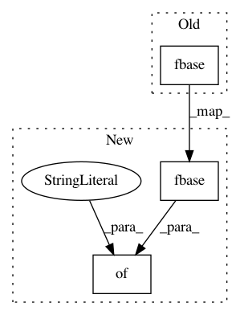

bbf56fc18b3f67617eafcc7b0a4c700fd43fa1b5,cnvlib/importers.py,,load_targetcoverage_csv,#Any#,46
Before Change
if no_cvg_cnt > TOO_MANY_NO_COVERAGE:
echo("*WARNING* Sample", fname, "has >", TOO_MANY_NO_COVERAGE,
"probes with no coverage")
pset = CNA.from_rows(core.fbase(fname), cna_rows, ("gc",))
pset.sort()
return pset
After Change
if no_cvg_cnt > TOO_MANY_NO_COVERAGE:
echo("*WARNING* Sample", fname, "has >", TOO_MANY_NO_COVERAGE,
"probes with no coverage")
pset = _GA.from_rows(cna_rows, ("gc",), {"sample_id": core.fbase(fname)})
pset.sort()
return pset
In pattern: SUPERPATTERN
Frequency: 3
Non-data size: 3
Instances
Project Name: etal/cnvkit
Commit Name: bbf56fc18b3f67617eafcc7b0a4c700fd43fa1b5
Time: 2015-06-09
Author: eric.talevich@gmail.com
File Name: cnvlib/importers.py
Class Name:
Method Name: load_targetcoverage_csv
Project Name: etal/cnvkit
Commit Name: 25016b4ef075defc711f6e18ab73013d4fa29e66
Time: 2015-06-13
Author: eric.talevich@gmail.com
File Name: cnvlib/coverage.py
Class Name:
Method Name: interval_coverages
Project Name: etal/cnvkit
Commit Name: bbf56fc18b3f67617eafcc7b0a4c700fd43fa1b5
Time: 2015-06-09
Author: eric.talevich@gmail.com
File Name: cnvlib/reference.py
Class Name:
Method Name: bed2probes